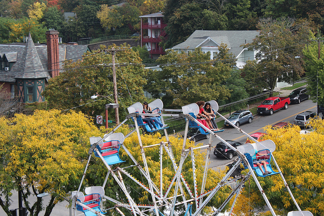
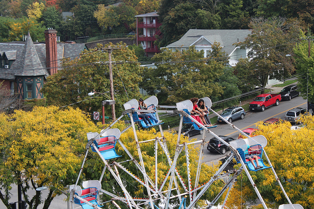

Come join us for a weekend of family fun, food, and entertainment in Ithaca, NY! You'll find wonderful food, a fantastic family atmosphere, and a variety of entertainment and activities that make this Ithaca's premier fall celebration.
To locate the venue of the event and areas for parking, use this map for guidance.
This map also contains the closest parking areas to the festival. Information about parking fares not included.
Looking for family festivities? Check out these activities!
Carnival games
Petting Zoo
Face Painting